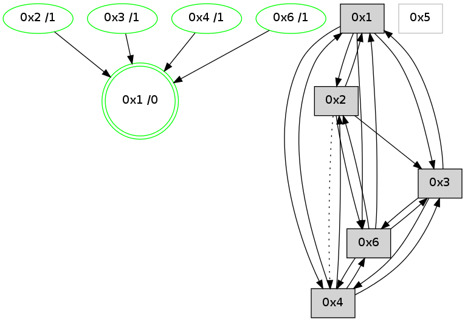

>> << IDX [start] -100 -25 -5 +0 [1250.48962712]
 Previous packets
----------------------------------------------------------------------
1245.467094 beacon01(adaf) #0 coord=01,02,05,03,04,06 cycle=944.0ms assoc
-- color-indic=0 64 db be
1245.477055 beacon02(adaf) #0 coord=01,02,05,03,04,06 cycle=944.0ms assoc 64 8a 41
1245.487054 beacon05(adaf) #0 coord=01,02,05,03,04,06 cycle=944.0ms assoc 64 2c 6b
1245.497057 beacon03(adaf) #0 coord=01,02,05,03,04,06 cycle=944.0ms assoc 64 b0 4f
1245.507055 beacon04(adaf) #0 coord=01,02,05,03,04,06 cycle=944.0ms assoc 64 16 65
1245.517056 beacon06(adaf) #0 coord=01,02,05,03,04,06 cycle=944.0ms assoc 64 62 79
1245.528964 [Hello(3): seq=994 sym=6,1,4 color=2 sysInfo=hasWarning,MaxColorIndicationCalled,ColoringModeIndicationCalled,MaxColorResponseCalled stat=6:13,0,7,1/1:1,15,4,1/4:14,10,9,2]
1245.531974 [STC(3)->1 #0.223 new-neigh,tree-change,inconsistent-stability,stable,to-color d=1]
----------------------------------------------------------------------
1246.471597 beacon01(adaf) #0 coord=01,02,05,03,04,06 cycle=944.0ms assoc
-- color-indic=0 64 96 b9
1246.481558 beacon02(adaf) #0 coord=01,02,05,03,04,06 cycle=944.0ms assoc 64 c7 46
1246.491558 beacon05(adaf) #0 coord=01,02,05,03,04,06 cycle=944.0ms assoc 64 61 6c
1246.501558 beacon03(adaf) #0 coord=01,02,05,03,04,06 cycle=944.0ms assoc 64 fd 48
1246.521560 beacon06(adaf) #0 coord=01,02,05,03,04,06 cycle=944.0ms assoc 64 2f 7e
1246.532676 [Hello(6): seq=910 sym=4,3,1,2 color=3 sysInfo=hasWarning,MaxColorIndicationCalled,ColoringModeIndicationCalled,MaxColorResponseCalled stat=4:0,0,1,0/3:10,0,5,1/1:4,13,14,0/2:0,0,1,0]
1246.537007 [Hello(2): seq=1482 sym=6,1 asym=4 color=13 sysInfo=hasWarning,MaxColorIndicationCalled,ColoringModeIndicationCalled,MaxColorResponseCalled stat=6:7,0,2,1/1:9,7,5,0/4:10,0,6,1]
1246.539723 [Hello(1): seq=898 sym=2,4,6 color=0 sysInfo=hasWarning,MaxColorIndicationCalled,MaxColorResponseCalled,MaxColorRequestCalled,ColoringModeRequestCalled stat=2:0,3,11,0/4:8,0,5,1/6:13,2,15,1]
----------------------------------------------------------------------
1247.476105 beacon01(adaf) #0 coord=01,02,05,03,04,06 cycle=944.0ms assoc
-- color-indic=0 64 52 d6
1247.486065 beacon02(adaf) #0 coord=01,02,05,03,04,06 cycle=944.0ms assoc 64 03 29
1247.496066 beacon05(adaf) #0 coord=01,02,05,03,04,06 cycle=944.0ms assoc 64 a5 03
1247.506066 beacon03(adaf) #0 coord=01,02,05,03,04,06 cycle=944.0ms assoc 64 39 27
1247.516068 beacon04(adaf) #0 coord=01,02,05,03,04,06 cycle=944.0ms assoc 64 9f 0d
1247.537503 [Hello(6): seq=911 sym=4,3,1,2 color=3 sysInfo=hasWarning,MaxColorIndicationCalled,ColoringModeIndicationCalled,MaxColorResponseCalled stat=4:0,0,1,0/3:10,0,6,1/1:5,13,14,0/2:1,0,1,0]
1247.541445 [Hello(4): seq=993 sym=2,1,3,6 sysInfo=hasWarning stat=2:0,0,0,0/1:5,11,6,0/3:1,0,10,1/6:1,0,6,1]
----------------------------------------------------------------------
1248.480611 beacon01(adaf) #0 coord=01,02,05,03,04,06 cycle=944.0ms assoc
-- color-indic=0 64 1e 66
1248.490572 beacon02(adaf) #0 coord=01,02,05,03,04,06 cycle=944.0ms assoc 64 4f 99
1248.500574 beacon05(adaf) #0 coord=01,02,05,03,04,06 cycle=944.0ms assoc 64 e9 b3
1248.510573 beacon03(adaf) #0 coord=01,02,05,03,04,06 cycle=944.0ms assoc 64 75 97
1248.520572 beacon04(adaf) #0 coord=01,02,05,03,04,06 cycle=944.0ms assoc 64 d3 bd
1248.542309 [Hello(2): seq=1483 sym=3,6,1 asym=4 color=13 sysInfo=hasWarning,MaxColorIndicationCalled,ColoringModeIndicationCalled,MaxColorResponseCalled stat=3:0,0,0,0/6:8,0,2,1/1:10,7,5,0/4:10,0,6,1]
1248.545458 [Hello(1): seq=899 sym=2,4,6,3 color=0 sysInfo=hasWarning,MaxColorIndicationCalled,MaxColorResponseCalled,MaxColorRequestCalled,ColoringModeRequestCalled stat=2:0,3,11,0/4:8,0,5,1/6:14,2,15,1/3:0,0,0,0]
1248.548900 [STC(1) #0.224 new-neigh,tree-change,inconsistent-stability,stable,to-color d=0]
----------------------------------------------------------------------
1249.485118 beacon01(adaf) #0 coord=01,02,05,03,04,06 cycle=944.0ms assoc
-- color-indic=0 64 da 09
1249.495078 beacon02(adaf) #0 coord=01,02,05,03,04,06 cycle=944.0ms assoc 64 8b f6
1249.505079 beacon05(adaf) #0 coord=01,02,05,03,04,06 cycle=944.0ms assoc 64 2d dc
1249.515080 beacon03(adaf) #0 coord=01,02,05,03,04,06 cycle=944.0ms assoc 64 b1 f8
1249.525079 beacon04(adaf) #0 coord=01,02,05,03,04,06 cycle=944.0ms assoc 64 17 d2
1249.535080 beacon06(adaf) #0 coord=01,02,05,03,04,06 cycle=944.0ms assoc 64 63 ce
1249.546633 [STC(2)->1 #0.224 new-neigh,tree-change,inconsistent-stability,stable,to-color d=1]
1249.550649 [Hello(4): seq=994 sym=2,1,3,6 sysInfo=hasWarning stat=2:1,0,0,0/1:6,11,7,0/3:1,0,10,1/6:1,0,6,1]
1249.554413 [STC(4)->1 #0.224 new-neigh,tree-change,inconsistent-stability,stable,to-color d=1]